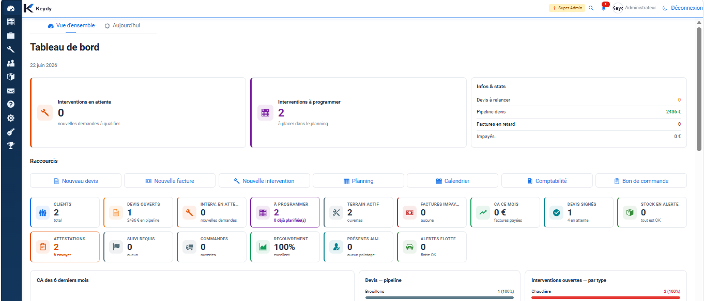
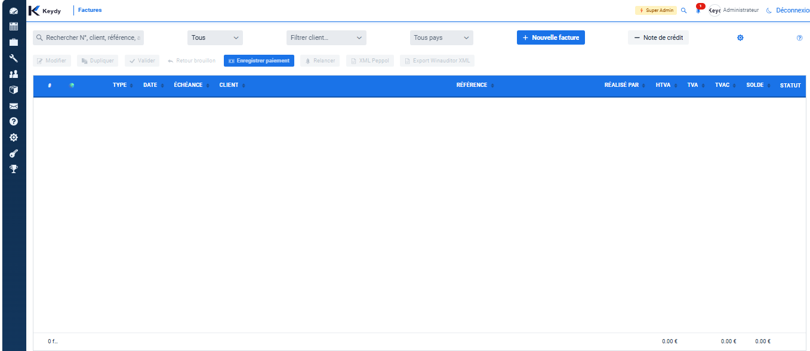
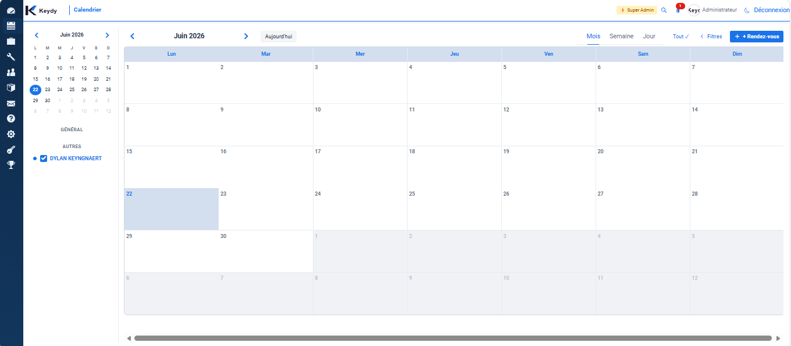

Centraliser les clients
Retrouver rapidement les coordonnées, l'historique, les documents et les travaux liés à chaque client.
Logiciel de gestion métier
Le logiciel qui aide les entreprises de chauffage, sanitaire, VMC, électricité et bâtiment à gérer leurs clients, devis, factures, chantiers et fournisseurs dans un seul outil.
À quoi ça sert
Keydy rassemble les données importantes pour suivre l'activité: demandes clients, devis, factures, planning, chantiers, fournisseurs et documents.
Retrouver rapidement les coordonnées, l'historique, les documents et les travaux liés à chaque client.
Préparer les offres, transformer les devis acceptés en factures et garder une vue claire sur l'administratif.
Organiser les interventions, les étapes, les documents techniques et les informations utiles au terrain.
Conserver les informations fournisseurs, les achats, les références et les éléments nécessaires au suivi.
Pour qui
Keydy s'adresse aux indépendants, petites équipes et PME qui doivent suivre à la fois le client, le chantier et l'administration.
Modules
La base peut évoluer avec des modules métier. Cette structure permet d'éviter de payer pour des fonctions inutiles au départ.
Fiches clients, contacts, adresses, historique et documents.
Création, suivi, transformation et documents commerciaux.
Dossiers, étapes, informations terrain et suivi de l'avancement.
Interventions, rendez-vous, équipes et organisation du temps.
Références, achats, contacts et informations administratives.
Articles, matériel, mouvements et besoins pour les interventions.
Aperçus du logiciel
Cette zone est prévue pour présenter quelques captures du programme: gestion clients, devis, factures, chantiers, planning et suivi des techniciens sur tablette.

Un aperçu pour montrer la partie administrative: clients, devis, factures, chantiers et fournisseurs.

Le technicien peut retrouver ses interventions, consulter les informations du client, ajouter des photos et préparer le rapport.

Présenter le passage du devis à la facture et le suivi administratif.

Montrer l'organisation des rendez-vous, interventions et équipes.

Afficher les dossiers, documents, étapes et informations terrain.
Tarifs
Abonnement mensuel par utilisateur, modulable selon vos besoins. Vous ne payez que ce que vous utilisez.
Abonnement mensuel
Le socle pour gérer votre activité au quotidien.
À la carte
Ajoutez les modules utiles à votre activité.
Accompagnement
Configuration, import de données et formation sur site.
Préparez votre demande
Cochez les modules qui vous intéressent pour votre demande de démo.
Ressources
Tout ce qu'il faut pour démarrer avec Keydy : mode d'emploi, tutoriel de mise en route, brochure commerciale et détail des modules.
Guide complet d'utilisation du logiciel : clients, devis, factures, planning, interventions, attestations et plus.
Guide pas à pas pour votre première connexion : paramétrage, import des données, premier devis, installation KeydyApp.
Présentation de l'offre Keydy : KeydyWeb, KeydyApp, KeydyScan et les avantages pour votre entreprise.
Fiche détaillée de chaque module Keydy : fonctionnalités, cas d'usage et bénéfices pour votre métier.
Questionnaire à compléter pour préparer votre environnement Keydy : infos, documents à fournir, modules souhaités.
Modèle de contrat de licence et d'abonnement SaaS KeydyWeb, avec conditions et modalités.
Société Keydy
Keydy est pensé pour les entreprises qui doivent rester efficaces entre les appels clients, les offres, les interventions, les achats et la facturation.
L'objectif est simple: proposer un outil clair, pratique et évolutif, avec des modules qui suivent les besoins réels des métiers techniques.
Contact
Le site peut déjà servir de base pour présenter le produit, puis être publié sur keydy.be quand le nom de domaine sera disponible.